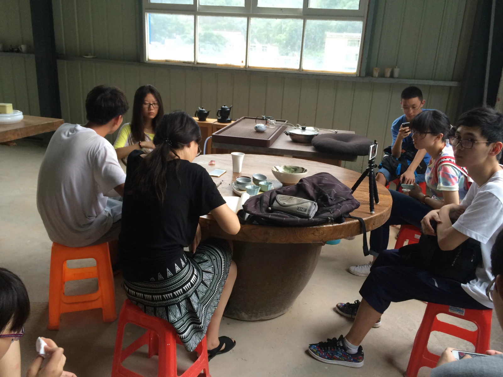
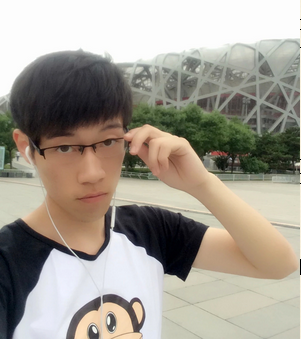

这是一篇严肃的文——记大一下
如果说大一上学期的关键词是“尝试”的话，我想下学期的重点则是“节奏”。在习惯了清华园每日的阳光后，从生活到学习到社工的方方面面，都在形成属于自己的节奏。鉴于上学期的总结写得比较文艺，以及被某人的游记教做人后，觉得我并不适合装文艺，也自认写不出什么很有深度的总结，不如就这样记下这学期的所见所感。所以，下面将是一篇严肃的文章：

读书——“论什么是半途而废”
从高考后的暑假开始，就打算多读点书来弥补读书少的空缺，不然“读书少，容易被骗啊”，还能减少浪费在其他无意义事情上的时间。暑假确实读了一些书的，然而到了大一上整个学期也没推进多少，所以下学期一开始就准备重新拾起来。正巧学期刚开始的时候，可能是在家养成的生物钟吧，或许是还不适应早上亮灯的变化，每天六点钟准时起床（因此被室友认为得了“撒切尔综合症”……）。这样每天早上洗漱后都会有一个多小时的空闲时间，就被我用来专门看书了。虽然我看书不是一般的慢，但每天一个多小时的话，还确实看了一些的。
-
《基督山伯爵下》是我最先看完的，虽然和读上的时间隔得有些久远，有些任务和剧情记不太清了，但边看边回想看完后着实认为其对情节的构思、伏笔的运用、人物的心理变化、社会环境的刻画十分到位；
-
《龙族三（下）》明显就看起来快多了……果然我还是内心里看这种小说更带感吗……；
-
《怪诞行为学》看起来很有意思，看了好多心理学实验和行为经济学上的分析，以至于我在“心理学入门”这门课上参加的一个实验竟然是我看过的一个……实验没有名字真的不是故意的，以及说到这就想起来这门课最终的实验时间没达标，结果83低分飘过，虽然课也确实没去上几次；
-
《菊与刀》顶着室友对这本书的批判看完了，感觉写得是有些夸张，书作者作为一个外国人对其他文化的理解也许就是这样，更何况作为一个社会学家。不过各方面解读也都有道理，只是有点解读过度的感觉，可能使我理解无力吧；
-
《苏菲的世界》听起来总让人脑补很神奇的画面，然而这其实真的是一本很短小很好的哲学启蒙读物。除了读起来感觉是给小学生看的以外其他像讲述方式什么的都挺喜欢。
然而，读书大计终止于我早上起得越来越晚后，慢慢习惯了之后，早上再也无法六点多自然醒了，能在上课前二十分钟之前醒已然是一件困难的事了——说到这后半学期第一节课迟到的次数也真是多了不少，真是惭愧——没有了这段黄金时间，白天的我更是很少拿起书来阅读，以至于后来基本都没有看什么书了。表示忏悔，暑假要重新捡起来，手边的书有《雪国》和《梦的解析》，flag已立：这个暑假我一定可以看完。
情系母校——“意料之外的惊喜”
从上学期最后开始准备，一直操心了好久的情系母校也算是上个寒假回来干的一件大事了。然而除了第一场高一高二宣讲会，其他的几次活动都不是很符合我的预期……不过总归是付出了不少努力，这学期开始要全校评奖，那就评呗，就把材料什么的写一写，整理一下。答辩的时候非常感谢小朱精彩的答辩，可惜当时有其他事情并没有去听成。
记得结果出来的时候正在北大小西门外刷夜，真的是喜出望外了，全校一等奖，小型支队总评全校第二，真是不枉大家的付出了。虽然颁奖典礼也有事没去成，不过听小朱的描述说现场频繁出现我们支队的影像材料，还是感到十分骄傲。还清楚地记得领志愿工时的时候，工作人员听到是全校一等奖时椅子一震的场景。得到了一堆高大上的奖品，还是十分开心的。这也算是那一段时间一直各方面不顺的情况下给我的最大激励了。

学习——“有非常不好的越来越颓的节奏……”
话说上学期的总结中还壮气凌云地立志下学期要好好学习，更进一步。然而下学期的表现啪啪打脸，虽然最终总评均绩基本和上学期持平，还高了0.3分，但学期中的学习过程真是不敢细想，最终的排名也不知是否会退步。总之在平常的学习上依然有一种没有尽自己所能的感觉，总会有明明没什么玩的却还是想盯着电脑不想学会习的场景，让我总是感到有些愧疚。
几门数学课明显没有上学期重视了，最起码上课不记笔记了，更有甚者上课也总是会迟到。曾经有一次第一大节的微积分课等我到了，只上了20分钟就全部下课了……大物基本也一直在吃老本，上课基本都在炉石、刷朋友圈、空间和看演示实验中度过了。作业基本靠翻书看例题，外加百度大法。最终总评除了线代和上学期持平还都算满意，微积分竟然91上九，以及最满意的离散96也是说明了期末大整理大预习大刷题的有效性，大物95虽然不像有些选李列明的AK，也算还好了。但是纯靠期末的大突击心里还是虚的不行，虽然下学期没有这些数学课了，此类重要的课还是要好好听，所以flag之二：下学期一定会好好听课。
相比之下任选课真的是水一水最终成绩也水一水了，唯一用心的是听说(2)。Cassandra的课还是听室友的建议选的，说的是上课好玩，人很好，平常没什么作业，期末和她聊天就行了。结果这学期真的是“翻脸不认人”啊，平常有不少小的让写的、听的、生活中做的作业，还有不计其数的pre……如果大小都算的话，好像有五六次pre吧。不过话说回来这学期感觉和上学期一大不同就是pre变得多了好多，上学期只有与一个读写(4)的pre就让我担心的要命，这学期各个课程接到的pre任务总数大概要突破两位数，而我又不是那种在pre小组里水一水就完事的那种，我总喜欢为此想好多。英语这里的诸多pre我就总是承担起构思整体流程和分配任务的角色，但说真的还确实慢慢喜欢上pre了，各种不同pre小组认识的人就是一大资源，这在后面的暑期实践招募中还会有所体现。而且我们这个英语pre的小组由于pre次数多之间混的都挺熟的，每次讨论什么的也都十分融洽，我帮组里化工系的妹子改写过大作业，他们也都帮我招募过实践队员，是目前最和谐的一个小组了。几次pre也都效果不错，最终总评班里第二，也算没白为pre操那么多心。至于其他的一些任选，好像都是表现一般，没有弃疗也不算认真，最终除了个别上九十都是八十多飘过。
体育真的是换成引体向上后跪的不行，练了一学期，虽然也并不是很用心地每天去练，最后考试依然差点爆零，标准的只算了两个。这将近20分一扣，有一段时间一度十分担心挂科，再加上这学期阳光长跑一直懒得刷，最后快结束了发现才刷了6次，真的超级担心挂科。所幸最后专项足球进步还挺大，每天刷阳光长跑也成功擦边过，总评小70算没有实现挂科。以后深感要更加努力地锻炼了，引体向上一直要坚持练，下学期的3000米也要开始了。所以flag之三：明天一定要开始早上跑3000米。
顺便再说下双学位吧，最终报了美双，没有按爸妈的建议报经双。也许确实出来说修个美双不如经双名头大，但我也并不想要。每次说到修的是美双总会被问”你以前学过画画吗？”我只能说这个美双是数字娱乐设计，做一些游戏、动画的。选择美双，并不是想将来累死累活地在中国做游戏，承担起振兴国产游戏的大旗。之所以放弃经双，纯粹是一直以来对于做游戏尝试的一个愿望，而现在有这个机会，如果不试一下我一定会后悔的。相信我不会辜负我的选择。
社工——“我自省……”
说起来这学期还经辅导员推荐上了社工课，这个课挺好玩，学到不少东西，老师也都很有意思。但这学期其实并没有做很多的社工，也不排除过了一学期没有之前那么上心的可能。
班里的组织感觉有松散的趋向，不知道是否属正常。从我个人来讲，我是觉得组织活动的热情没有上学期高了，有点懒了。上学期跑前跑后组织了三次班聚，每次都提前好久找地方定细节。这学期只在学期末组织了一次，不过感觉还挺好的，对到场的转系生自认还是处理得不错，没有让他们感到生疏。学期中又一次班聚则基本上属于我的原因没有搞出来，那一段浪得有点过，快到预定日子了才去定位子，结果没能定到合适的时间，就继续往后推了。为此感到有些愧疚，说实话这学期并不能给自己的分内工作打个高分。
其他班里活动上，感觉其他班委也都有或多或少的懈怠。但还是成功组织了素拓和集中主题团日，讨论的时候提出了一些自己的看法。惭愧的是素拓和团日的时候正赶上各种pre集中的日子，精力有限，并没有操心很多，团日我所在的小组感觉没出什么力，还闹了点小不愉快，深感对不住。不过最后小组展示得很不错，这种情况下还拿下了最佳展示奖。甲团准备当中码了几千字的团日总结，负责想游园会的小游戏。开了很多脑洞然而最终好像并没有达到所期待的效果，准备中出了不少bug。总之这学期感觉作为组织委员基本水过，只做了些基本的工作。马导还找我聊过是否想下学期竞选个班长团支书什么的，然而这学期并不是很活跃，再考虑考虑吧，不知道是否有这个勇气尝试。
学生会这学期也开始招新了。首先是校学生会，兴致冲冲地去参加了生权部的面试。这还是在大学遇到的第一次正式面试，结果遇到了比较花式的三轮面试。本来还纠结这次到底会是个面还是群面，结果没想到一起来，一个都不少。第一次参加这样的面试还是有点紧张，尽可能说出我想表现的了，不过可能和其他优秀的同学比还稍逊一筹，最后被调剂到体育部了。然而不太想在体育部待，于是选择了拒绝，就算增长一次面试的经验吧。后来的系学生会和科协也都报名了，这个面试就水一点了，一点也不紧张，去随便聊聊天就进了。现在在刚刚进运营部和科协网络部，还没做什么工作，要说的话就是随便在酒井资讯上推了篇推送，其他好像也就蹭了部长一顿饭了……希望下学期能好好做一点事情。
另外的话，我是属于学校的各种计划都报名尝试尝试的那种人，这学期像什么思源计划、Coach计划、启创计划都有报名，反正也没什么损失，就当练习写简历了。然而思源计划并没有入选，其他两个成功入选但并没有开始有什么实质性的工作，看看之后的发展吧，总没有什么坏处。

实践——“柳暗花明又一村”
这个实践从产生这个念头到最终实施也是经过了不少的波折。故事的开头是一次班委会上支书说一个班要有两个支队，我就主动揽下一个组建的任务，另一个支书来建（然而最终班上有四个支队……）。目的地纯粹是看实践基地列表一时兴起挑出来的——景德镇，然而当时一定想不到招募队员有多波折。
一开始以为班里的女生一定会去支书的支队，毕竟支书是个妹子，我就在班里男生或系里再招点人就好。结果出乎意料的是班里剩下的女生都选择加入了我的支队，再加上拉了妹子过来以及小朱和她室友也表示有意向，曾经一度出现支队人快满了却只有我一个男生的情况。看着队员都快满了也就没着急招人，然而变故突生，马导要带一个支队去防城港的新建实践基地进行实践，而我们班一个妹子正好广东的，就让她当支队长组建了一个支队，顺便的就带走了班里的其他女生……这时我才觉得有招不到人的危险，班里有意去的也早已报名了支书的支队。于是开始创公众号，写推送招人，然而时间有点晚了招人也是挺困难。最终大概凑了七八个后一起吃个饭商量下时间什么的细节，结果之后又由于时间不合适走了三个人。
这下真的没剩几个了，又已经临近考试周，此刻招人更是困难，我甚至有解散支队的冲动。然而我还是选择了再试一下，于是，在我下定决心的那天上午，我开始四处联系人。这时各种pre中认识的人就成了我最好的媒介，大概花了半天的时间，找了十几个不同系的认识的同学帮忙转发招募信息。抱着试试看的态度，我等了两天，果然出现了转机，开始陆续有感兴趣的各个系的同学想加入我们。到后来，甚至出现了过载，最后的名额还是我一个个见面后选出来的比较需要的同学，这给了我极大的信心。后来的实践过程也表明招募的队员真的是各有各的特色，十分靠谱，而且基本都来自不同系，十个人有七个系。
至于后来的前期准备过程也是困难重重，什么给政府打电话踢皮球踢成圈、实践基地极其不靠谱（简直就是一个商业组织）、推脱领导不在出差什么的，总之这里就不再赘述了。每次我们都支队成员聚一起讨论一下，分配任务回去各尽其责，倒也算顺利地联系下来了。最后的实践过程也不再细说，总体来说还是挺成功的，除了有点热，支队长有些时候不靠谱外……大家一起玩的还是很开心的，认识这么多新同学也非常愉快。目前正在整理一些后期材料，一些统计的数据和采访记录也有待分析，纪录片也在制作，还要写长篇大论的报告，继续把我们做的推送出来，会继续加油，相信最后会得到满意的结果。

其他
这学期感觉还有一个就是单机游戏打通的不少…从寒假的“鬼泣4”，到开学后玩的“新鬼泣”，再到黄大大推荐的“刺客信条2”，又下了“轩辕剑外传：穹之扉”，正好打通出“仙六”，趁小学期通关，顺便手动不开修改器过了“仙五前传”的DLC。暑假准备开始“FF13”，恩就这样。
参加了“晚安清华”活动，虽被指责“每日一秀”，但还是挺好玩的，并运用正确的战略夺得了最后一天的“晚安之星”，还拿到了一个小米手环…虽然没用上几天就在点很背的那几天莫名其妙地丢了。

台震堃来的时候去北科找姚鹏正好碰上了那里举行的什么电影节，跟着一大群人体验了一把追星的感觉：堵在体育馆入口等明星进场，然而最终其实也只看到了张艺谋…但也还不错~
发现了骑车游北京的玩法，这学期加入了自行车协会，买了骑行用的山地车（后来由于一次通勤车钥匙丢北大就它就变成我的通勤车了…）。由于时间的问题其实跟社团里的人只出去了一次香山，其他大多自己有时间出去转转。骑车去个什么奥林匹克森林公园啦、鸟巢啦、天安门啦，还是很不错的，总比窝在寝室要好很多。

感觉越写越像流水账了，大概想说的也就这些吧，也不做什么展望了，实践证明展望什么的并没有什么卵用，就按照内心的方向走吧，只求做完不后悔就好，用自己的努力踏上未来多种可能中最适合自己的一种，即把握住了自己的命运。
最后，新的旅途即将开始。